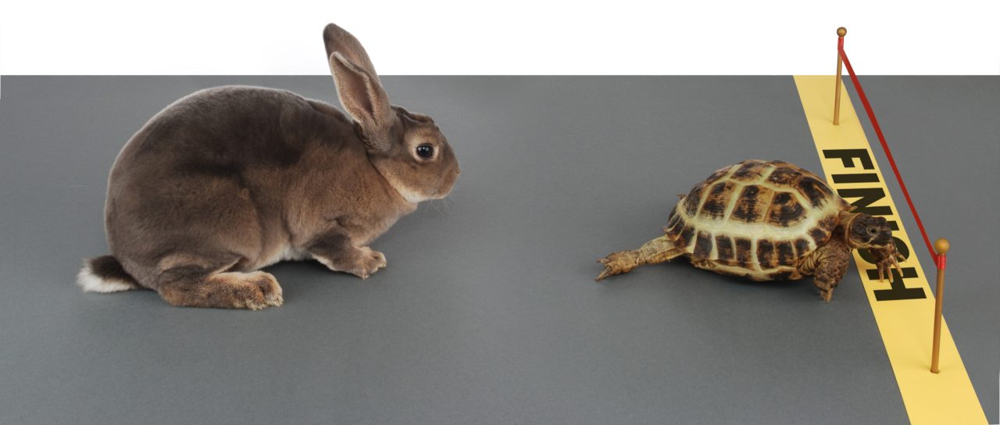

Energy and persistence conquer all things.

Energy and persistence conquer all things. —— Benjamin Franklin
活力与毅力可以征服一切。—— 本杰明·富兰克林（美国总统）
persistence[n. 坚持不懈; 执著]: If you have persistence, you continue to do something even though it is difficult or other people are against it.
I was shocked by my opponent's persistence. 我被对手的执着震撼了。
persistence[n. (尤指坏事物的) 持续存在]: The persistence of something, especially something bad, is the fact of its continuing to exist for a long time.
the persistence of hunger 持续的饥荒
Because of the persistence of the high temperature I asked for a sick leave.因为持续的高烧，我请了病假。